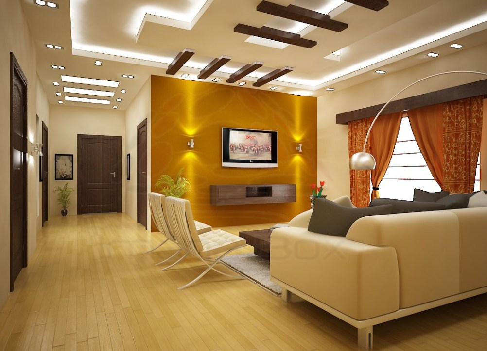

Project: Modern Living Room Transformation

Project Overview:
In this project, the goal was to create a warm, inviting living space that also exuded elegance and sophistication. The client desired a modern aesthetic with subtle yet striking features that would make the room the centerpiece of their home.
Key Design Elements:
- Neutral Color Palette: The use of soft beige tones for the furniture and walls creates a serene and calming atmosphere, while the dark, glossy accent wall adds depth and contrast.
- Custom Textured Wall: The intricately designed textured wall behind the main seating area serves as a focal point, adding a rich, tactile dimension to the space.
- Plush Seating and Layout: The arrangement of the sofas and chairs is both functional and aesthetically pleasing, encouraging conversation and social interaction.
- Modern Lighting Design: Recessed ceiling lights highlight key areas of the room, enhancing textures and finishes to create a warm glow during the evening.
- Elegant Furnishings and Decor: A sleek, black coffee table contrasts beautifully with neutral tones, while a luxurious rug adds softness to the space.
- Functional Details: Hidden air conditioning and built-in fixtures offer seamless functionality without disrupting the room's aesthetic.
Client Collaboration and Execution:
This project required close collaboration with the client to fully understand their vision and preferences. From conceptual design to final execution, each element was tailored to their needs, ensuring a result that exceeded their expectations.
Outcome:
The finished living room is a testament to the commitment to quality and excellence in design. It is a space where modern luxury meets comfort, providing both aesthetic appeal and everyday usability. The client was delighted with the transformation, praising the attention to detail and the way the room now reflects their personal style.